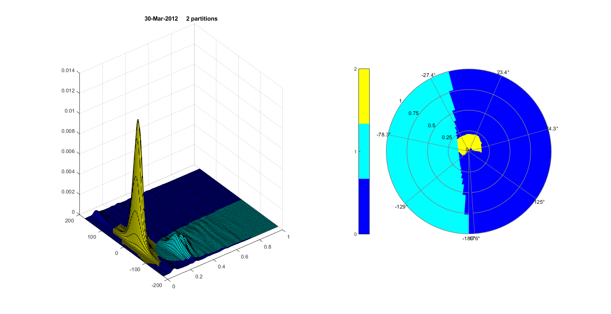

Contents
Example script demonstrating wave partitioning of frequency - directional wave spectra
clear
%
load 2-D wave spectra data
fn = 'data/wavespec2d_ex.mat'; load(fn) % t freq dir S(freq,dir,time) %
wind frequency and direction analysis (NCEP_winds = 0)
>0 plot timeseries of fw and dw analysis
plt1 = 1; [fw,dw] = readspectra(t,freq,dir,S,plt1); fw(fw>0.12) = 0.12; % set maximum wind cutoff (fw = 0.12 Hz) %
run partition routine loop
h = 30; % water depth in meters wfc = 1; % wind parabola limits const_wind = 1; % if =1, uses internal windminf = 0.12, if =0 provides % fw (wind frequency) % figure('Position',[ 100 100 1600 1000]) for i = 1:length(t) % strong wind at 267, complex at 100, 287 disp(i) % wave spectrum for timestep i E0 = S(:,:,i); % partition if const_wind == 1 [AA,E]=partition(freq,dir,E0,wfc); % internal windminf = 0.12 Hz else [AA,E]=partition(freq,dir,E0,wfc,fw(i)); % windminf = fw(i) end np = max(max(AA)); % number of partitions % calculate wave parameters for each partition [f{i},D{i},Ep{i},H{i}] = waveparamspart(E,freq,dir,AA,h); % partitioned energy surf plot clf subplot(121) surf(freq',dir',E',AA') title([datestr(t(i)) ' ' num2str(np) ' partitions']) % pcolor partition plot subplot(122) [~,c] = polarPcolor(freq',[dir ; dir(1)]',[AA AA(:,1)]'); c.Ticks = 0:np; % np ticks colormap(jet(np+1)) drawnow % pause return end
1